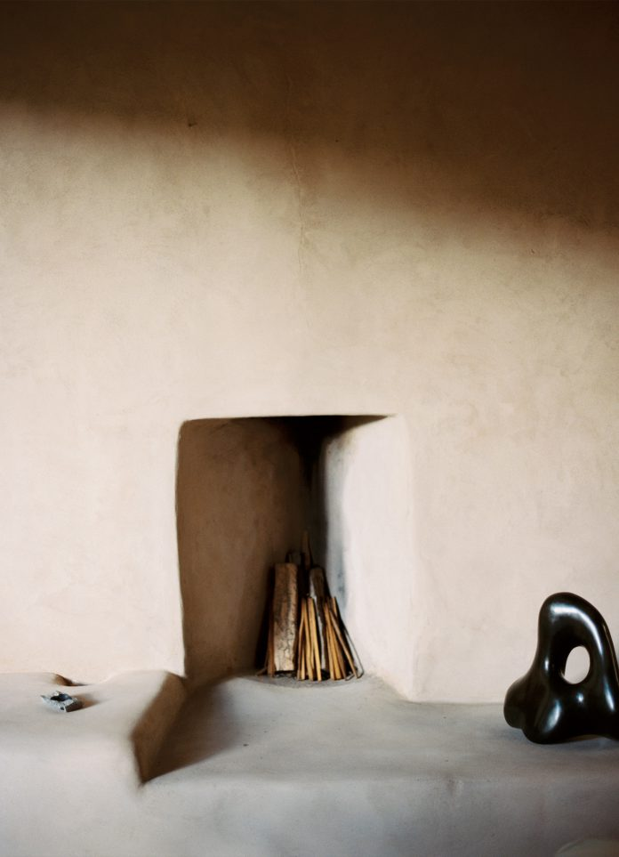

-

design gardens Great Dixter
Great Dixter in Rye, East Sussex, is a garden of broken rules and well-turned compost.
-
design partnership Camaleonda in California
with b&b italia
-
art design los angeles Built In
Los Angeles creatives present work in response to Richard Neutra's VDL Research House.
-
art Re-writing Rodin
the power of touch
-
design architecture new york The Modulightor Building
Architect Paul Rudolph's finel project is a kaleidoscopic array of spatial arrangements.
-
design gardens Time and Space to Wait
Gardener Dan Pearson shares his restrained and patient approach to planting his own garden in Somerset.
-
music playlist Summer playlist 2021
A selection of songs for late summer.
-

art Intentional Sparseness
Visiting Georgia O'Keeffe's home and studio
-
design architecture The Goetheanum
A surreal structure of flowing raw concrete, built by the Austrian philosopher and spiritualist Rudolf Steiner
-
Volumes from the archive
on the subject of travel, art, design and style
shop